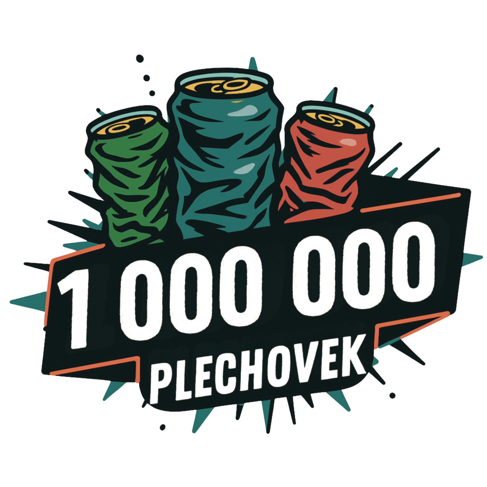
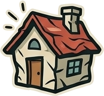

Zachraň přírodu, soutěž a bav se. Čistíme Česko společně, jednu plechovku po druhé. Až jich posbíráme milion.
📲 Otevřít aplikaci a sbíratProjekt si klade za cíl posbírat milion plechovek, které se válí volně v přírodě. Cílem je v lidech probudit nutnost a nutkání sbírat jakékoli odpadky, na které v přírodě narazí.
Bylo by super, kdyby si někteří uvědomili, že když se takové odpadky nevyhodí, tak se v přírodě ani neobjeví. To všechno je ovšem schováno za zábavnou hrou, která se jmenuje Milion plechovek.
Všichni sběrači mohou pomocí aplikace sledovat svůj pokrok, mohou sledovat, kolik ušetřili energie, jak si vedou v žebříčku ostatních sběračů, a především mohou sami aktivně sbírat plechovky a šířit tuto vizi dál.
Příběh vznikl v roce 2024, kdy jsme se synem jeli na kole z Brna na Vysočinu. Přestože jedete malebnou krajinou, velmi často kolem krásných remízků, pořád vidíte v příkopech strašné množství nepořádku. A já jsem si všiml, že velkou část tvoří plechovky.

Asi rok mi to leželo v hlavě. Zjistil jsem, že taková plechovka je vlastně "zlatý důl" – každá se dá ze 100 % recyklovat a to donekonečna. Její recyklací se ušetří neuvěřitelných 95 % energie oproti výrobě nové.
V září 2025 jsem se vydal na svůj první sběr a nasbíral 18 plechovek na Výhonu nad Židlochovicemi. Brzy mi ale došlo, že milion sám nenasbírám – trvalo by mi to při dvou kusech denně asi 1 200 let. Proto jsem projekt otevřel pro všechny.
Zlom přišel, když jsme sbírání plechovek přirovnali k houbaření. Je to úplně stejné! Jakmile začnete, vidíte je všude a přestane vám být lhostejné je tam nechat. Navíc skrytá plechovka v trávě je při sečení smrtící past pro divoká zvířata.
Nebráníme se jakékoliv spolupráci. Ať už jste hudební festival, který by chtěl využít náš brand a systém pro sběr ve vašem areálu, nebo jste přímo firma, která plechovky vyrábí a chce něco vrátit těm, kteří čistí přírodu od vašich značek.
Rádi s vámi vymyslíme, jak náš projekt posunout dál.
Tomáš Hájek
Opatovická 150, Rajhradice, 664 61
Telefon: +420 775 284 312
E-mail: tomas@tomashajek.cz